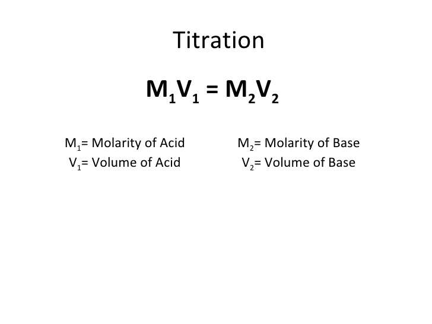

Study Guide: Big Idea 6
K
K is a proportion of [products] over [reactants] at equilibrium.
Q
Q is a proportion of [products] over [reactants] initially.
K Vs Q
If Q is bigger than K, the reverse direction needs to be taken to reach equilibrium
If Q is less than K, the forward direction needs to be taken to reach equilibrium
If Q is equal to K, equilibrium has already been reached
Equilibrium shifts and Le Chatelier
Adding a reactant would make the equilibrium shift to the left.
Adding a product would make the reaction shift to the right.
Adding pressure would shift the equilibrium to the side with more moles of gas.
ICE Chart
Buffers
Buffers are solutions that maintain a constant pH. It has to have a weak acid with its conjugate base or a weak base with its conjugate acid.
The equivalence point is when the moles of the titrant is equal to the moles of the titrate. It is when titration is complete.
Titration

A titration of a strong acid with a strong base would have an equivalence point at a pH of 7.
A titration of a strong acid with a weak base would have an equivalence point at a pH less than 7.
A titration of a weak acid with a strong base would have an equivalence point at a pH higher than 7.
A titration of a weak acid with a weak base would have an equivalence point at a pH slightly lower than 7.
Any titration of a weak acid, a buffer is formed before the equivalence point is reached.
PH